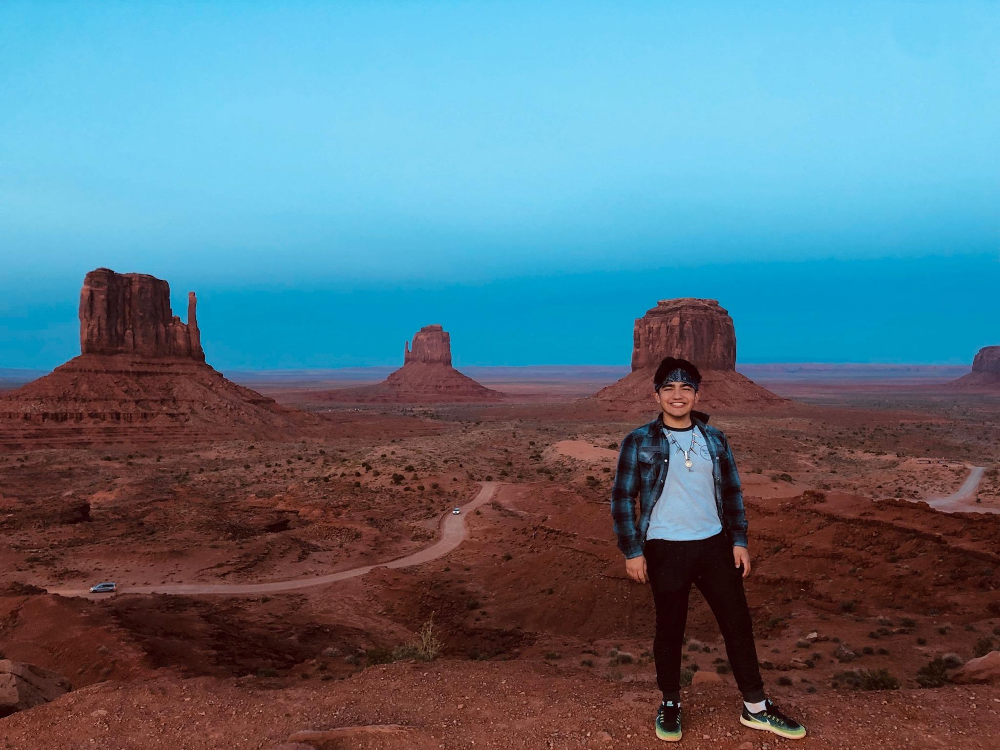
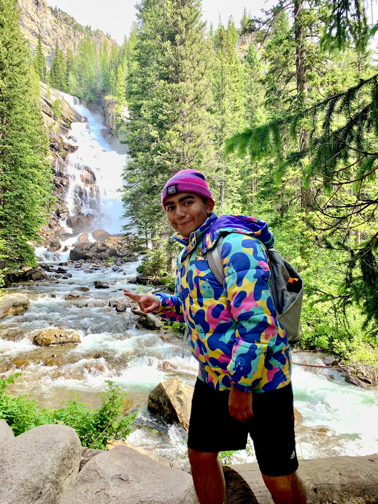
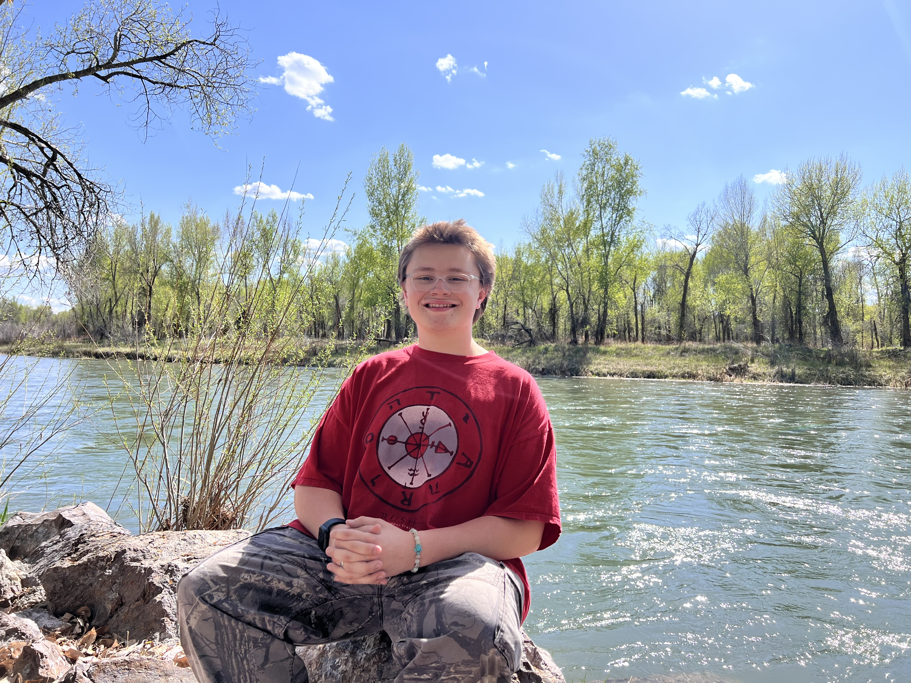
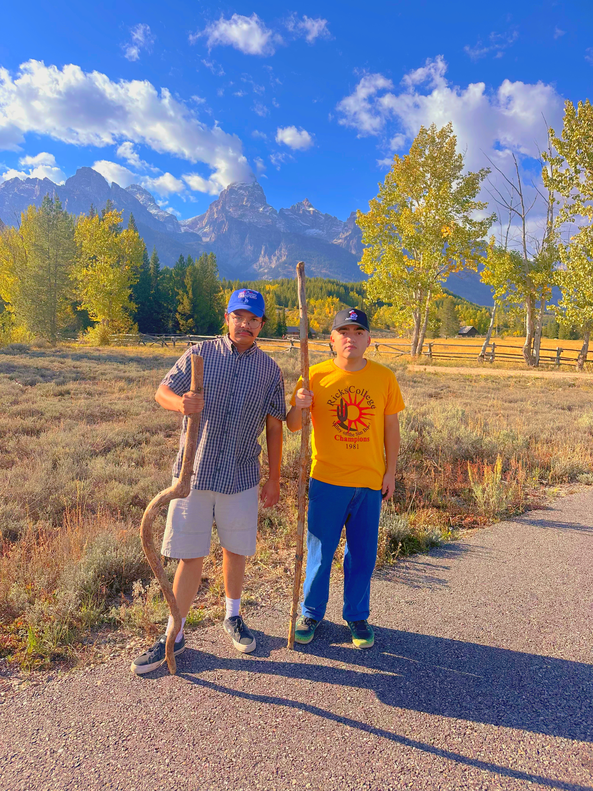
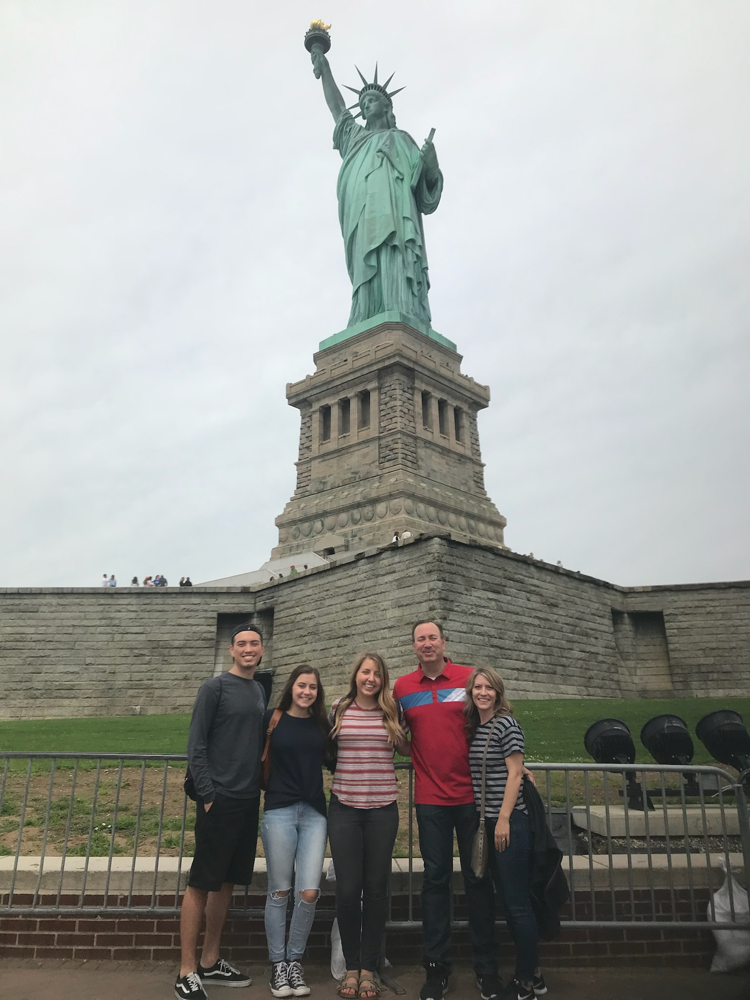

U.S. Travel

Introduction
Welcome to the U.S. Travel page — a personal look at my favorite places across the country. From big cities to hidden natural gems, this is a collection of locations that have made an impact on me and my friends. Whether you're looking for inspiration for your next trip or just want to explore from your screen, you're in the right place.
Overview
From seasonal tips and personal showcases to friend-recommended hot spots, this page offers a mix of memories and useful travel info. You'll find photos, recommendations, and even a temperature-based guide for the best times to visit different regions in the U.S.
Travel Showcase
San Francisco, California
San Francisco has always been close to my home, and I always make it a point to visit the city when I can. Whether it’s going to the Embarcadero, the Exploratorium, or down at the Wharf for clam chowder, the city’s got something for everyone.

Grand Tetons, Wyoming
Every time I am at school in Rexburg, the Tetons are a constant sight in the distance. It’s such a peaceful place and every trip up there resets your mind. And don’t forget to bring your bear spray!
Arches National Park, Utah
I did not know until I went to visit this park that you could hike up a mountain and come out on top of a giant archway. Utah is full of incredible rock formations and Arches is no exception. Go during cooler months.
Friends Picks!

Kelly Canyon, Idaho
"Being able to go to school at a place that has really cool opportunities for the outdoors is awesome. Whether it’s snowboarding in the winter or hiking during the spring, Kelly Canyon has been a nice quick trip to get out and feel fresh, and its been a good source from relieving stress with its nice spots!"
- Cade Christopherson

Grand Tetons, Wyoming
"Living near the Tetons, I used to think I’d eventually get used to them or stop being amazed by how big and beautiful they are. But every time I drive by, it still stuns me. It’s a perfect place to relax."
- Ernie Lasagna
Washington DC
"Being able to go to the capitol of the country was a really cool experience. I loved seeing all the monuments and learning about all the things I never knew in the museums. The city has a lot of energy."
- Chase Christopherson

Statue of Liberty, New York City
"Traveling to NYC was a really sweet experience. I’ve never seen so many people and so many things going on all at once. I got to go with my family and it’s something I’ll always remember."
- Jacob Shaffer
Hot Spots
| Destination | Best Month (Avg Temp °F) | Worst Month (Avg Temp °F) | Notes |
|---|---|---|---|
| New York City, NY | October (60°F) | December (38°F) | Budget-friendly in fall, high hotel costs in winter |
| Las Vegas, NV | March (70°F) | July (106°F) | Good deals in spring, extreme summer heat |
| Orlando, FL | January (71°F) | July (92°F) | Low crowds in winter, humid and pricey in summer |
| Los Angeles, CA | May (75°F) | August (85°F) | Clear skies in May, crowded in August |
| San Francisco, CA | September (70°F) | June (60°F) | Sunny in September, foggy in June |
| Chicago, IL | September (73°F) | February (32°F) | Pleasant fall weather, harsh winter |
| Washington, D.C. | April (67°F) | July (89°F) | Cherry blossoms in spring, hot and humid summer |
| Miami, FL | March (78°F) | August (90°F) | Dry and breezy in spring, storm season in summer |
| Honolulu, HI | May (84°F) | December (80°F) | Calm in May, expensive in December |
| Boston, MA | June (75°F) | January (30°F) | Events in summer, cold winters |